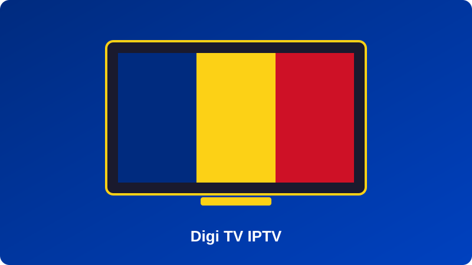
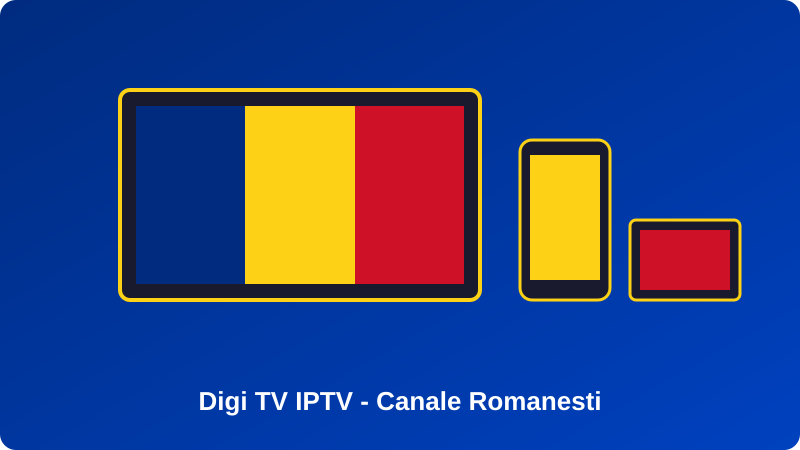

Daca ai cautat digi tv iptv, probabil vrei un lucru simplu: sa vezi canalele romanesti preferate, fara cabluri, fara tehnicieni si fara contracte care te leaga ani la rand. Stirile de seara, filmul de weekend sau meciul cu prietenii ar trebui sa porneasca imediat, pe orice ecran din casa.
Realitatea este ca termenul acopera mai multe lucruri. Unii se gandesc la televiziunea digitala a unui operator din tara, altii la serviciile de televiziune prin internet. Pentru cei plecati la munca, diferenta este mare: cablul unui operator local nu merge in alta tara, in timp ce un abonament IPTV merge oriunde ai internet.
In acest ghid explicam ce inseamna digi tv iptv, cum functioneaza, ce canale poti primi, cum il compari cu cablul si cum eviti listele gratuite nesigure. Echipa Romania IPTV lucreaza zilnic cu familii din Romania si din diaspora, iar sfaturile vin din situatii reale. Daca esti la inceput, citeste mai intai ghidul general despre iptv romania, apoi revino aici pentru detalii.

Cuprins
- Ce inseamna digi tv iptv si de ce este atat de cautat
- Cum functioneaza televiziunea romaneasca prin internet
- Canalele romanesti pe care le poti primi
- Digi tv iptv versus abonamentul clasic de cablu
- Cum configurezi serviciul pe televizor, telefon sau box
- Liste gratuite si riscuri de evitat
- Digi tv iptv pentru diaspora
- Cum alegi un furnizor si ce criterii conteaza
- Intrebari frecvente
- Concluzie
Ce inseamna digi tv iptv si de ce este atat de cautat
Expresia digi tv iptv apare in cautarile romanilor din tara si din strainatate, iar in spatele ei stau aceleasi nevoi: canale romanesti stabile, imagine clara si un pret fara surprize. Termenul amesteca doua idei, televiziunea digitala clasica si televiziunea livrata prin internet, asa ca o clarificare te ajuta sa alegi corect.
IPTV in cuvinte simple
IPTV vine de la Internet Protocol Television. Canalele nu mai ajung prin cablu sau antena, ci prin conexiunea ta de internet, direct intr-o aplicatie. Nu ai nevoie de receptor, de parabola sau de tehnician la usa.
De ce cauta lumea digi tv iptv
Multi folosesc numele unui operator cunoscut ca punct de plecare, apoi descopera ca vor ceva mai flexibil. Cei plecati la munca nu pot lua cablul cu ei, iar cei care se muta des au nevoie de un serviciu care merge oriunde. De aceea digi tv iptv a devenit o cautare frecventa, mai ales in diaspora.
Merita spus de la inceput ca nu exista o formula magica. Ceea ce conteaza este sa pornesti de la obiceiurile tale: cate ore te uiti pe zi, cine mai foloseste televizorul si ce canale nu vrei sa ratezi. Cu aceste raspunsuri, orice oferta devine usor de evaluat si nu mai cumperi la intamplare. Un test de cateva zile iti arata imediat daca imaginea, sunetul si lista de canale se potrivesc cu asteptarile familiei.
De asemenea, tine cont de faptul ca televiziunea prin internet se schimba repede. Aplicatiile se actualizeaza, serverele se imbunatatesc, iar furnizorii serioni adauga canale noi. De aceea este bine sa alegi un partener care comunica deschis si raspunde cand ai o problema, nu doar cand vrei sa cumperi.
Cum functioneaza televiziunea romaneasca prin internet
Principiul este simplu: serverele furnizorului transmit canalele in flux continuu, iar aplicatia de pe aparatul tau le reda in timp real. Calitatea depinde de doua lucruri, serverul si conexiunea ta.
Ce ai nevoie pentru a incepe
- o conexiune stabila la internet, de preferat prin cablu sau Wi-Fi bun;
- un aparat compatibil: Smart TV, Android TV box, telefon sau laptop;
- o aplicatie IPTV instalata si datele de acces primite de la furnizor.
Ce viteza de internet este suficienta
Pentru HD ajung circa 10 Mbps, iar pentru 4K este bine sa ai 25 Mbps liberi. Daca in casa sunt mai multe ecrane pornite, aduna cerintele. Un router vechi sau Wi-Fi-ul aglomerat cauzeaza mai multe probleme decat serverul.
In practica, fluxul porneste de la server, trece prin internet si ajunge in aplicatie in fractiuni de secunda. Daca oricare dintre aceste verigi este slaba, vei observa blocaje sau imagine pixelata. De aceea, un furnizor bun foloseste mai multe servere si le monitorizeaza permanent, mai ales in serile cu meciuri sau evenimente importante, cand traficul creste brusc.
Tine minte si ca nu toate aparatele sunt la fel de rapide. Un televizor vechi poate porni aplicatia mai greu, in timp ce un box modern raspunde instant. Daca observi ca navigarea intre canale este lenta, testeaza aceeasi lista pe telefon: daca acolo merge bine, problema este aparatul, nu serviciul.
Canalele romanesti pe care le poti primi
Prima intrebare la orice varianta de digi tv iptv este ce posturi primesti de fapt. Un pachet complet trebuie sa acopere stirile, filmele, sportul, emisiunile de divertisment si desenele animate in limba romana.
Stiri si actualitate
Posturile de stiri sunt cele mai urmarite de diaspora. Jurnalul de seara ramane, pentru multi, ritualul care leaga familia de casa.
Filme, seriale si divertisment
Telenovelele, filmele de seara si emisiunile de weekend fac diferenta dintre un pachet bun si unul mediocru. Cere lista completa si bifeaza posturile pe care le vezi zilnic.
Sport si evenimente live
Meciurile consuma multa banda, deci stabilitatea serverului conteaza cel mai mult. Testeaza serviciul intr-o seara cu meci inainte sa platesti.
Canale pentru copii si muzica
Desenele in limba romana ii ajuta pe copiii nascuti in strainatate sa pastreze limba. Posturile muzicale completeaza pachetul pentru toata familia. Lista detaliata o gasesti in ghidul iptv romania.
Dincolo de numarul de canale, conteaza organizarea listei. O lista bine grupata pe categorii, cu ghid de programe, te scutete de cautari lungi. Intreaba daca ghidul electronic este inclus si daca imaginea este disponibila in HD pentru canalele principale. Familiile cu copii apreciaza si controlul parental, iar cei care lucreaza in ture isi doresc reluarea emisiunilor pierdute.
Nu uita de posturile regionale si de cele tematice, cum sunt cele de gastronomie, documentare sau muzica populara. Pentru multi romani din diaspora, tocmai aceste posturi aduc cel mai mult sentiment de acasa si fac diferenta intre un pachet obisnuit si unul cu adevarat potrivit.
Digi tv iptv versus abonamentul clasic de cablu
Comparatia dintre televiziunea prin internet si cablul clasic il ajuta pe orice om sa decida fara presiune. Tabelul de mai jos rezuma diferentele importante.
| Criteriu | Cablu clasic | IPTV prin internet |
|---|---|---|
| Instalare | Tehnician, cabluri | Aplicatie, cateva minute |
| Contract | Adesea 12-24 luni | Flexibil, fara obligatii mari |
| In strainatate | Nu functioneaza | Functioneaza oriunde ai net |
| Ecrane | Un aparat per receptor | TV, telefon, tableta, laptop |
Cand merita cablul
Daca esti in Romania, ai deja contract bun si folosesti un singur televizor, cablul poate fi suficient. Nu exista raspuns universal, iar orice alegere trebuie sa porneasca de la felul in care te uiti la televizor.
Cand alegi IPTV
Daca locuiesti in afara tarii, te muti des sau vrei acelasi program pe telefon si pe televizor, digi tv iptv in varianta internet este mai practic. Platesti pentru ce folosesti si poti schimba aparatul oricand.
Pretul trebuie privit pe termen lung. Un abonament de cablu pare ieftin la inceput, dar poate include taxe de instalare, echipament inchiriat si penalitati la reziliere. Un serviciu IPTV are, de regula, costuri mai transparente, iar daca nu esti multumit, poti renunta fara bataie de cap. Compara intotdeauna totalul pe douasprezece luni, nu doar suma din prima luna.

Cum configurezi serviciul pe televizor, telefon sau box
Configurarea dureaza, de obicei, sub zece minute. Pasii sunt aceiasi pe aproape orice aparat.
Pe Smart TV sau Android TV box
- Instaleaza o aplicatie IPTV din magazinul de aplicatii.
- Introdu datele de acces primite de la furnizor.
- Asteapta incarcarea listei de canale.
- Alege un post si testeaza imaginea si sunetul.
Pentru detalii despre aparate, citeste si digi iptv box.
Pe telefon si tableta
Procesul este identic: instalezi aplicatia, adaugi datele si ai canalele in buzunar. Pe iPhone si iPad cauta o aplicatie compatibila din App Store.
Sfaturi pentru o imagine stabila
Foloseste cablu de retea unde este posibil, reporneste routerul din cand in cand si evita descarcarile mari in timpul meciurilor. Aceste obiceiuri mici previn majoritatea blocajelor.
Dupa configurare, ia-ti cateva minute sa explorezi aplicatia. Creeaza o lista de favorite cu canalele pe care le urmaresti cel mai des, ca sa nu derulezi prin sute de posturi. Verifica si setarile de imagine: pe unele televizoare, activarea modului de joc sau reducerea zgomotului din imagine face fluxul mai fluid si mai placut ochiului.
Liste gratuite si riscuri de evitat
Pe internet circula multe liste cu canale gratuite. Par tentante, dar vin cu riscuri reale.
De ce se opresc listele gratuite
Linkurile sunt raportate si sterse, iar listele nu au suport. Azi canalul merge, maine nu, iar tu nu ai pe cine intreba.
Alternativa sigura
Un furnizor cu test gratuit iti permite sa vezi calitatea inainte sa platesti. Asa eviti surprizele si ai ajutor in limba romana. Pentru context, vezi si daily iptv list.
Pe langa riscurile tehnice, exista si cele legate de confidentialitate. Unele aplicatii gratuite cer permisiuni inutile pe telefon sau urmaresc ce faci. Citeste intotdeauna ce permisiuni cere o aplicatie si instaleaza doar din surse oficiale. Daca ceva pare prea bun ca sa fie adevarat, de obicei nu este, iar costul real apare mai tarziu.
Digi tv iptv pentru diaspora
Pentru romanii din Italia, Spania, Germania, Marea Britanie sau Belgia, digi tv iptv inseamna mai mult decat televizor: inseamna legatura cu casa. Un serviciu prin internet merge identic in orice tara, fara abonament local si fara echipament special.
Familia si limba romana
Copiii asculta romaneste prin desene si emisiuni, iar parintii nu pierd stirile si emisiunile preferate. Este un mod simplu de a pastra obiceiurile de acasa.
Fusuri orare si inregistrari
Ora difera intre tari, dar programul se poate urmari la momentul potrivit daca furnizorul ofera functii de reluare. Intreaba inainte de comanda.
Mai exista un avantaj practic: te poti muta dintr-o tara in alta fara sa schimbi nimic. Aceleasi date de acces functioneaza in Italia, in Germania sau in Spania, iar canalele raman aceleasi. Pentru familiile care calatoresc intre tara si strainatate, acest lucru elimina complet grija abonamentelor multiple si a contractelor locale greu de anulat.
Cum alegi un furnizor si ce criterii conteaza
Alegerea furnizorului conteaza mai mult decat aplicatia. Iata ce merita verificat.
Lista de criterii
- test gratuit inainte de plata;
- suport rapid in limba romana, de preferat pe WhatsApp;
- canale romanesti complete, nu doar cateva posturi;
- pret clar, fara taxe ascunse;
- servere stabile in orele de varf.
Cum ne pozitionam noi
La Romania IPTV punem accent pe canalele romanesti, pe suport direct si pe test gratuit. Pentru comparatie, poti vedea si furnizori din alte comunitati, precum greek iptv sau tilaa iptv, apoi alege ce se potriveste nevoilor tale. Citeste si digi iptv si digi iptv romania.
Inainte de a comanda, cere sa vezi o demonstratie sau un test pe aparatul tau real, nu pe unul de prezentare. Asa afli exact cum arata serviciul in conditiile tale de internet. Noteaza-ti si timpul de raspuns al echipei de suport: un furnizor care raspunde in cateva minute inainte de vanzare va face acelasi lucru si dupa.
Intrebari frecvente
Ce inseamna digi tv iptv?
Este modul in care multi romani numesc televiziunea digitala livrata prin internet. Canalele ajung printr-o aplicatie, fara antena si fara cablu, pe orice ecran conectat la net.
Pot vedea canalele romanesti in strainatate?
Da. Serviciul depinde doar de conexiunea la internet, deci functioneaza in orice tara, inclusiv pentru romanii din diaspora.
Ce viteza de internet am nevoie?
Aproximativ 10 Mbps pentru HD si circa 25 Mbps pentru 4K. Daca folosesti mai multe ecrane in acelasi timp, aduna cerintele fiecaruia.
Cum primesc un test gratuit?
Scrie-ne pe WhatsApp, spune ce aparat folosesti si primesti acces de test, fara card si fara contract.
Merge pe Smart TV, telefon si box?
Da. Smart TV, Android TV box, telefoane si tablete Android sau iOS, laptopuri si alte aparate care accepta aplicatii IPTV.
Este legal sa folosesc IPTV?
Tehnologia este legala. Important este sa alegi un furnizor transparent, cu suport real, si sa eviti listele anonime de pe internet.
Sunt sigure listele gratuite?
Nu intotdeauna. Pot avea linkuri moarte, reclame agresive sau cer instalari dubioase. Un furnizor cu test gratuit este alegerea mai sigura.
Ce fac daca un canal nu porneste?
Reporneste aplicatia si routerul, verifica internetul, apoi scrie-ne pe WhatsApp pentru ajutor in limba romana.
Testeaza gratuit canalele romanesti
Scrie-ne pe WhatsApp si primesti acces de test, fara card si fara contract.
Cere testul pe WhatsAppConcluzie
Pe scurt, digi tv iptv inseamna televiziune romaneasca prin internet, pe toate ecranele din casa. Pentru diaspora este solutia cea mai flexibila, iar pentru cei din tara este o alternativa la cablul clasic. Evita listele gratuite instabile, testeaza serviciul seara, in orele de varf, si alege un furnizor care raspunde in limba romana.
Daca vrei sa incerci, scrie-ne pe WhatsApp si porneste-ti canalele cu Romania IPTV.